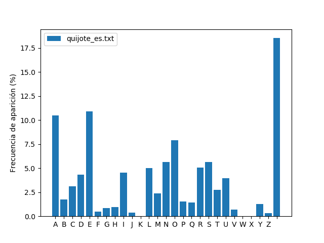
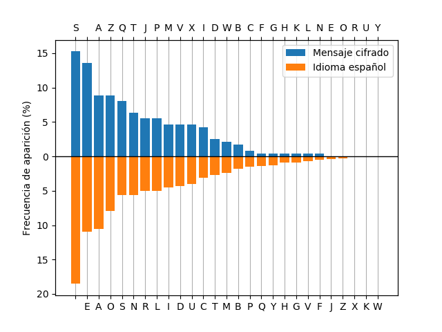
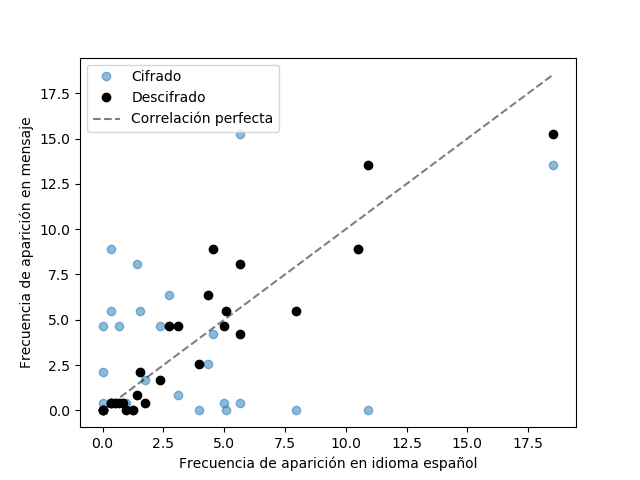

Análisis criptográfico de texto¶
Se tiene una serie de mensajes cifrados los cuales se quieren descifrar. Gracias a nuestro servicio de inteligencia sabemos que la técnica de cifrado utilizada es la siguiente. Los mensajes sólo contienen caracteres de la A a la Z y espacios entre palabras, no se utilizan signos diacríticos (acentos o la virgulilla de la Ñ) ni signos de puntuación. A todos estos caracteres se les asigna un número entero del 0 al 26 de acuerdo a la siguiente tabla:
Letra |
A |
B |
C |
D |
E |
F |
G |
H |
I |
J |
K |
L |
M |
N |
O |
P |
Q |
R |
S |
T |
U |
V |
W |
X |
Y |
Z |
Espacio |
Equivalente numérico |
0 |
1 |
2 |
3 |
4 |
5 |
6 |
7 |
8 |
9 |
10 |
11 |
12 |
13 |
14 |
15 |
16 |
17 |
18 |
19 |
20 |
21 |
22 |
23 |
24 |
25 |
26 |
Luego cada equivalente numérico (P) del mensaje original es convertido a otro entero (C) mediante la transformación afín:
donde ‘a’ y ‘b’ son las “claves” utilizadas. Finalmente, los nuevos números se convierten a caracteres utilizando la misma tabla. Observar que la expresión anterior es una congruencia, por lo tanto si el entero resultante luego de hacer a·P+b es mayor o igual a 27 (la cantidad de caracteres con los cuales se trabaja), se utiliza el caracter de la tabla tal que su equivalente numérico sea congruente módulo 27 con el valor obtenido. Por otro lado, para que cada caracter se cifre a un caracter diferente, es necesario que el entero utilizado como clave ‘a’ sea coprimo con 27, es decir, que su único común divisor sea 1.
Realice el programa
descifrar.pyque acepte como argumento el nombre del archivo con el mensaje cifrado y el valor de las claves ‘a’ y ‘b’ e imprima en pantalla el mensaje descifrado.
Nuestros espías han descubierto las claves utilizadas para cifrar el
mensaje del archivo mensaje_cifrado_00.txt. Puede utilizar este mensaje
para comprobar su algoritmo. Las claves descubiertas son
a = 7, b = 25
Ejemplo de implementación (python corresponde a python3):
$ python descifrar.py mensaje_cifrado_00.txt 7 25
Desafortunadamente, para los siguientes mensajes no se tienen sus claves de cifrado. Se le pide por lo tanto que realice un algoritmo que vulnere al sistema y las descubra. Para ello tenga en cuenta la siguiente observación: como cada caracter se transforma siempre al mismo caracter cifrado, puede comparar su frecuencia de ocurrencia con las de un texto ordinario para hallar una correspondencia.
Realice el programa
contar_letras.pyque calcule la frecuencia de aparición de cada caracter en el texto de un archivo que se le pase como argumento y guarde la distribución calculada en un archivo binario de numpy (.npy). Para ello quite del texto los signos diacríticos de todas las letras y omita los signos de puntuación y caracteres especiales, exceptuando el caracter de espacio que sí deberá incluir en la distribución ya que este caracter se encuentra en los mensajes cifrados. El programa además deberá generar una figura similar a la siguiente (que puede mostrarla por pantalla y/o guardarla como archivo):

Utilice este programa para generar la distribución de frecuencia de
aparición de letras en el idioma español utilizando el primer capítulo
de la novela “Don Quijote de la Mancha”, el cual puede encontrar en el
archivo quijote_es.txt.
Ejemplo de implementación (python corresponde a python3):
$ python contar_letras.py quijote_es.txt
...
$ python contar_letras.py quijote_es.txt -o español.npy
...
Puede utilizar el módulo argparse para manejar los argumentos de entrada.
Nos ha llegado la información de que los textos cifrados pueden estar
en otros idiomas además del español. Para ello, nuestros agentes le
han conseguido traducciones de este capítulo en varios idiomas
diferentes. Genere la distribución de frecuencia de aparición de
letras para el idioma inglés, alemán y finlandés utilizando el texto
en los archivos quijote_en.txt, quijote_de.txt y quijote_fi.txt,
respectivamente. Tenga en cuenta que estos idiomas pueden poseer
signos diacríticos diferentes a los del español. Genere un archivo
*.npy diferente para cada idioma.
Para descifrar los mensajes cifrados, puede hacer una correspondencia entre los caracteres más frecuentes del texto cifrado con los más frecuentes de cada idioma, como se observa en la siguiente figura:

Eligiendo dos pares de caracteres que se consideren correspondientes entre sí, es posible encontrar las claves ‘a’ y ‘b’ resolviendo el siguiente sistema:
donde \((C1,P1)\) y \((C2,P2)\) son los equivalentes numéricos de los caracteres elegidos.
Tenga en cuenta que la frecuencia de aparición de letras del mensaje puede diferir levemente respecto al texto que se usa como referencia. Por lo tanto es posible que deba probar más de una combinación de pares \((C1,P1)\) y \((C2,P2)\) hasta dar con la correcta. Para verificar que el mensaje se ha descifrado con éxito, puede calcular la frecuencia de aparición de los caracteres del mensaje descifrado y calcular su correlación con la de cada idioma. Puede utilizar para ello el coeficiente de correlación de Pearson, función que puede encontrar en el módulo scipy. Un valor superior a 0,8 ya debería indicar un correcto descifrado. Este coeficiente representa cuánto se acercan los puntos a la recta identidad en el siguiente gráfico:

Se le pide entonces que:
Se le pide entonces que realice el programa
criptoanalisis.pyque descifre el mensaje utilizando las distribuciones ya generadas de frecuencia de aparición de letras en los diferentes idiomas. El programa deberá:Cargar los archivos .npy ya generados (no vuelva a generar las distribuciones).
Obtener la frecuencia de aparición de letras del mensaje cifrado y compararla con la de cada idioma.
Para cada idioma, elegir dos pares de caracteres y utilizarlos para encontrar las claves ‘a’ y ‘b’.
Para cada idioma, descifrar el mensaje con las claves obtenidas y calcular la frecuencia de aparición de letras del mensaje descifrado. Hacer la correlación entre esta distribución y la del idioma correspondiente y comprobar si alguna es superior al 80%.
Si ninguna correlación supera el 80%, repetir el proceso utilizando diferentes pares de caracteres hasta encontrar las claves correctas.
Imprimir en pantalla el mensaje descifrado, el idioma que mejor se correlaciona y las claves ‘a’ y ‘b’ descubiertas.
Realizar un gráfico que compare los caracteres más frecuentes del mensaje cifrado con los más frecuentes del idioma detectado, similar al mostrado en la Figura 2.
Realizar otro gráfico que muestre la correlación entre la frecuencia de aparición de letras del mensaje descifrado y la del idioma detectado, similar al mostrado en la Figura 3.
Utilice este programa para descifrar los mensajes mensaje_cifrado_01.txt
a mensaje_cifrado_09.txt.
Ejemplo de implementación (python corresponde a python3):
$ python criptoanalisis.py mensaje_cifrado_01.txt --idiomas español inglés alemán francés italiano finlandés
...
$ python3 criptoanalisis.py mensaje_cifrado_01.txt -i español
...
Extra 1¶
El centro de inteligencia quiere ser capaz de cifrar sus propios
mensajes. Se le pide para ello que realice el programa cifrar.py que
tome un texto normal cualquiera y lo cifre utilizando claves ‘a’ y ‘b’
pasadas como argumento. El mensaje devuelto tiene que ser descifrable
mediante el programa del punto 1 utilizando las mismas claves ‘a’ y ‘b’.
El programa debe dar un mensaje de error si la clave a proporcionada es
inválida (no es cooprima con 27).
Ejemplos de implementación con a=1 y b=3 (python corresponde a python3):
$ python cifrar.py mensaje.txt 1 3
...
$ python cifrar.py mensaje.txt 1 3 -o mensaje_cifrado.txt
...
Extra 2¶
Nuestros espías han interceptado un mensaje muy peculiar que, aunque se
sabe que está en español, no puede ser descifrado utilizando la técnica
anteriormente expuesta debido a alguna peculiaridad del mensaje. El
mismo se encuentra en el archivo mensaje_cifrado_10.txt. Es capaz de
descifrarlo?
Importante
Los datos se encuentran en cualquiera de los dos archivos comprimidos mensajes_cifrados.tar.gz y mensajes_cifrados.zip